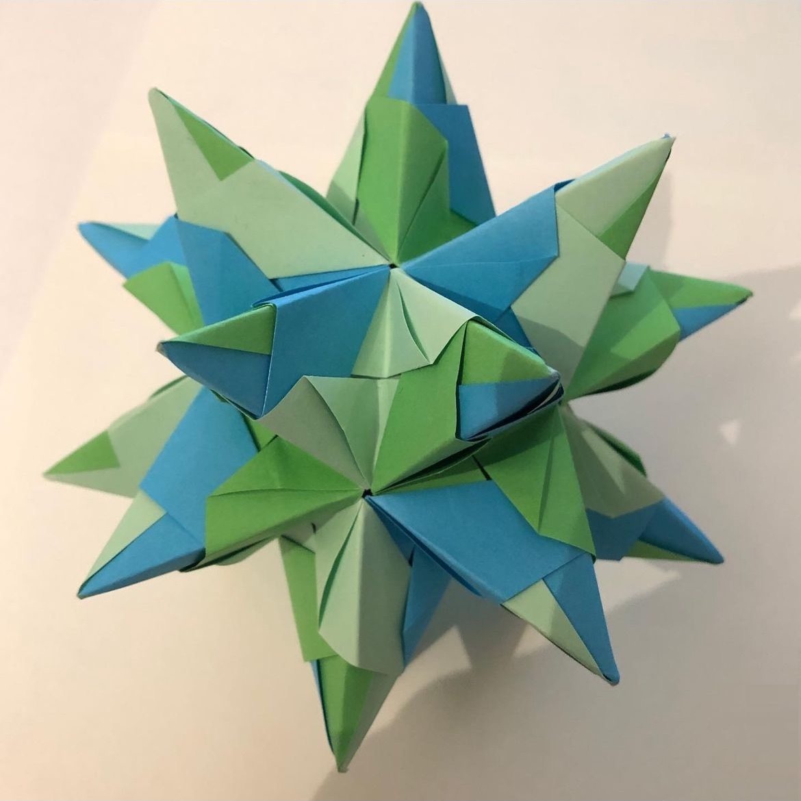

Lucas Petit - Étudiant en informatique et mathématiques
Je m'appelle Lucas et je suis actuellement étudiant en dernière année de master en informatique. Passionné par l'informatique et les mathématiques abstraites, j'aime résoudre des problèmes complexes et explorer de nouvelles solutions techniques. Mon parcours m'a permis d'acquérir des compétences solides en mathématique, en programmation et en développement d'algorithmes.
Au cours de mes études, j'ai eu l'occasion de travailler sur plusieurs projets académiques et personnels. Cela inclut le développement de sites web, de jeux vidéos ou d'algorithmes sur mesure. Parallèlement, j'ai également donné des cours particuliers de mathématiques, une expérience enrichissante qui m'a permis de renforcer mes capacités pédagogiques et ma gestion de projet.
En dehors de mes études, je suis passionné par la randonnée, l'astronomie et l'origami. Voici quelques photos que j'ai prises de ce que je fais !
Jupiter
La Lune
Un Kusudama
Je suis le créateur d'un site web éducatif, principalement sur le sujet des mathématiques et de l'informatique. Il y est regroupé un forum de discussion et d'entraide et des cours à suivre.